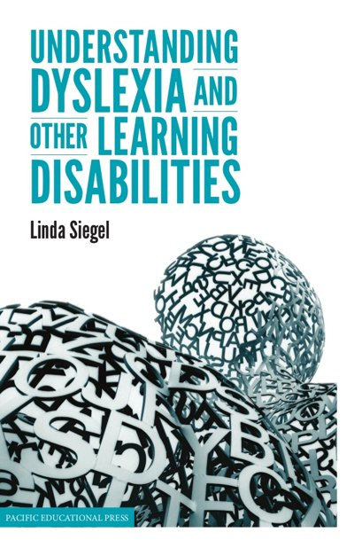

Nuestro compromiso
Si el niño no puede aprender de la forma en que se enseña, buscaremos desarrollar herramientas que enseñen de la forma en que ellos aprenden.
DEXIA KIDS ya está disponible
DEXIA KIDS es una app de estimulación cognitiva para mejorar el habla, la lectura y la escritura en español en niños de 3 a 8 años.
“Hay habilidades que son fundamentales para aprender a leer. Entre ellas se encuentran la capacidad para discernir los sonidos dentro de las palabras. DEXIA KIDS es una aplicación que enseña estas habilidades fundamentales en una forma entretenida. Los niños aprenden con rimas, sílabas, letras y sonidos a través de esta aplicación. Estas habilidades deben enseñarse temprano y DEXIA KIDS es una excelente manera de hacerlo.”
